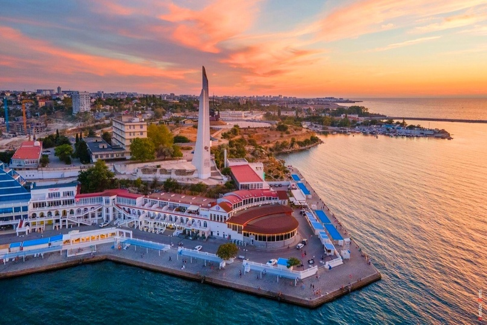

Севастополь
ㅤСевастополь прославился своей героической обороной в годы Крымской войны и Великой Отечественной войны. Город был почти полностью разрушен, но его жители не сдались.
ㅤСевастополь — это не просто город на берегу Чёрного моря. Это символ мужества, стойкости и героизма. Его история полна трагических событий, но также и невероятных подвигов. Защитники Севастополя показали, что даже в самых безнадёжных условиях люди способны сопротивляться и побеждать. Этот город стал одним из важнейших символов Великой Отечественной войны.
ㅤКак всё начиналось
ㅤВойна для Севастополя началась внезапно, как и для всей страны. 22 июня 1941 года немецкие войска начали операцию "Барбаросса", и вскоре их путь пролег через Крым. Севастополь был стратегически важным городом, ведь здесь находилась главная база Черноморского флота. Противник стремился захватить его как можно быстрее, чтобы уничтожить советский флот и получить контроль над Чёрным морем.
ㅤУже осенью 1941 года немецкие и румынские войска подошли к Севастополю. Советские войска оказали упорное сопротивление, но противник превосходил их в численности и технике. Тем не менее, защитники города не сдались. Они начали готовиться к длительной обороне, превращая Севастополь в неприступную крепость.
ㅤОборона Севастополя
ㅤОборона Севастополя длилась с октября 1941 года по июль 1942 года. Это была одна из самых ожесточённых битв Великой Отечественной войны. Город был окружён, но его защитники продолжали сражаться.
ㅤ1. Укрепления города
Защитники Севастополя создали мощную систему обороны. Они построили сотни дотов, дзотов и окопов, превратив каждый дом и каждую улицу в укрепление. Город стал настоящей крепостью, где каждый метр земли отстаивался с невероятным упорством.
ㅤ2. Роль Черноморского флота